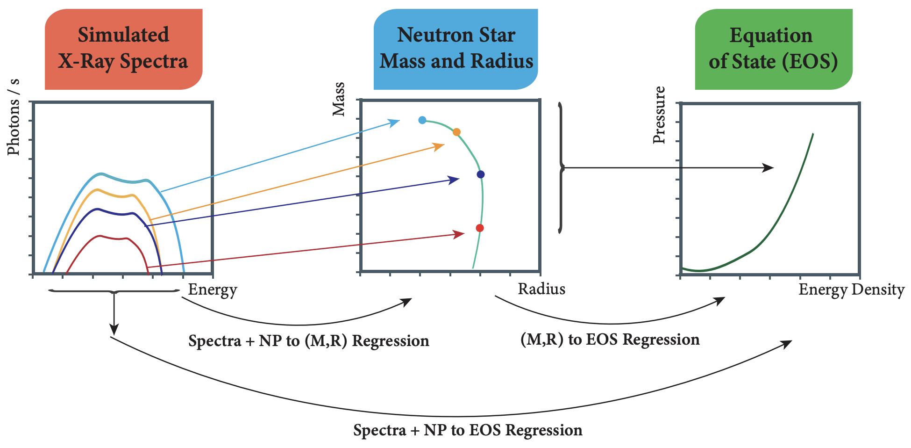

Deducing neutron star equation of state parameters directly from telescope spectra with uncertainty-aware machine learning: Delaney Farrell†, Pierre Baldi, Jordan Ott, Aishik Ghosh, Andrew W. Steiner†, Atharva Kavitkar, Lee Lindblom, Daniel Whiteson† and Fridolin Weber†
J. Cosmo. Astropart. Phys. 2 (2023) 16This is the first paper which constructs a method for directly inferring the parameters of the equation of state (EOS) of dense matter from neutron star X-ray spectra. This direct method allows for a complete propagation of the observational uncertainties to the EOS. Delaney and collagues showed that the less-direct method, where the spectra are converted to probability distributions over mass and radius before determining the EOS, is less accurate. Now, different prior distributions for the nuisance parameters can be explored.
